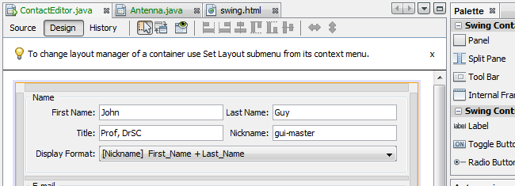

Swing

Clique na imagem para exibição em tela inteira
{kind=link}
Crie GUIs de aparência profissional com espaçamento e alinhamento automáticos.

GUI Builder
Crie GUIs Swing arrastando e posicionando os componentes de GUI de uma paleta em uma tela. O GUI Builder se encarrega automaticamente do espaçamento e do alinhamento corretos. Clique em JLabels, JButtons, ButtonGroups, JTrees, JTextFields, ComboBoxes e edite as propriedades diretamente no local.
É possível utilizar até o GUI Builder para fazer o protótipo de GUIs diante dos clientes.
Introdução à Criação de GUITrilha de Aprendizado de Aplicações de GUI do Java
Criando uma GUI do Swing no NetBeans IDE
{kind=link}
Paleta do Componente
A Paleta de Componentes extensível vem com componentes Swing e AWT pré-instalados e inclui um designer de menu visual. Arraste componentes da paleta e solte-os na tela.
Utilize o Navegador para exibir a árvore e as propriedades de um componente.

Depurador Visual
Depure uma aplicação do GUI Swing sem olhar no código-fonte e controlar o fluxo de execução em termos de estruturas e alto nível.
Selecione "Obter Tela da GUI" para criar uma tela da GUI da aplicação que serve de base para a funcionalidade do Depurador Visual.
Usando o Depurador Visual no NetBeans IDE

Plataforma NetBeans
A Plataforma NetBeans é um framework genérico para aplicações de desktop Java. Ela oferece a estrutura que todo desenvolvedor geralmente precisa para escrever por conta própria, salvando estado, conectando ações aos itens de menu, itens da barra de ferramentas e atalhos do teclado, gerenciamento de janela e assim por diante.
A Plataforma NetBeans fornece todos eles por padrão. Não é mais preciso que você mesmo codifique manualmente esses ou outras funcionalidades básicas da aplicação. A plataforma NetBeans não adiciona muito overhead para sua aplicação, mas ela pode economizar muito tempo e trabalho.
Trilha do Aprendizado da Plataforma NetBeans
Consulte Também
- Página da Release NetBeans IDE 8.1 para obter uma lista de funcionalidades realçadas na última versão estável.
- Trilha de Aprendizado em Desenvolvimento Geral de Java para tutoriais que o ajudarão a começar.